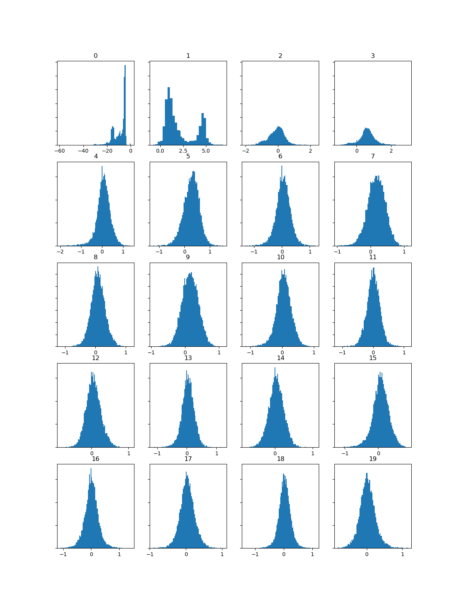
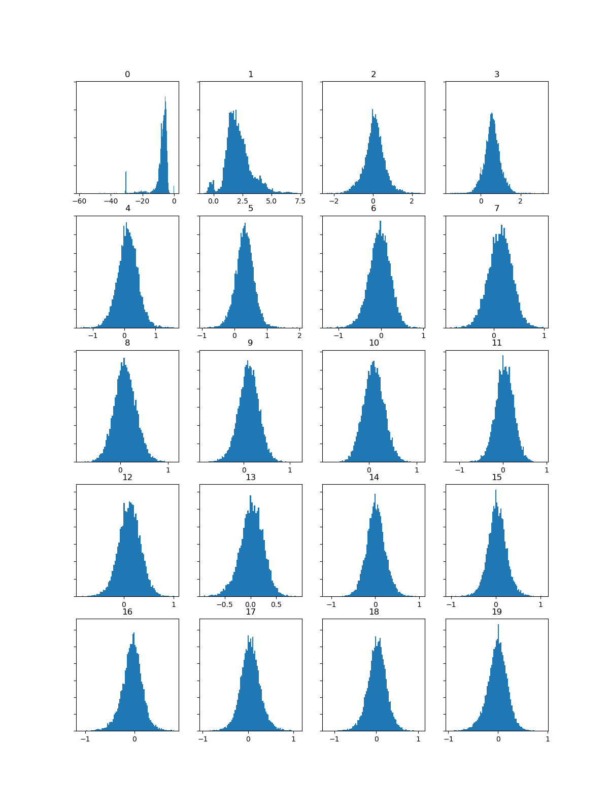
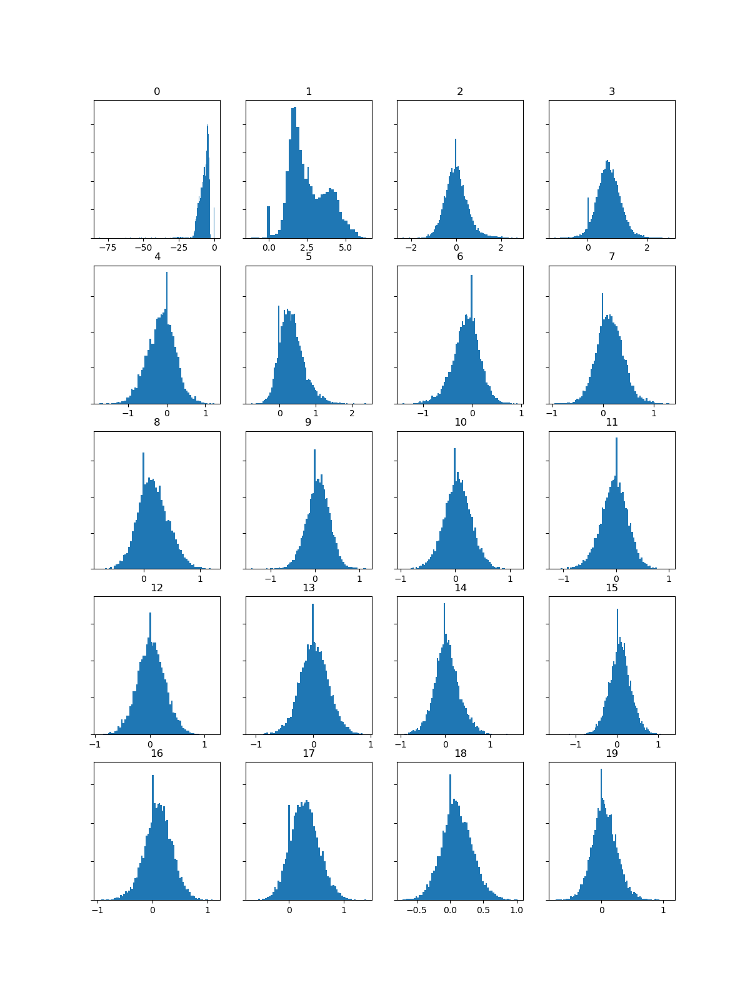

|  |  |  |
| When You Were Young | Human | Shot at the Night |
When comparing the chroma histograms for the three pieces I generated using the MFCC data, my first observation is that all three songs have a similar instrumental profile. However, there are some differences, particularly on the first track, When You Were Young, which appears to be quieter than the other two, more electronic-heavy songs. We can expect this, as the version used for the analysis (video version) has an extended intro where we can hear, albeit very quietly, minimal instrumentation.